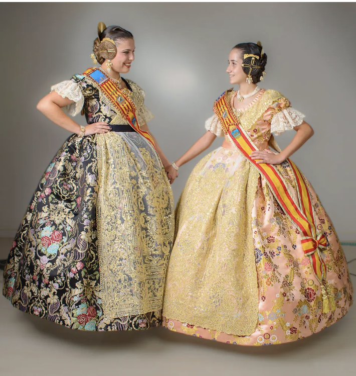
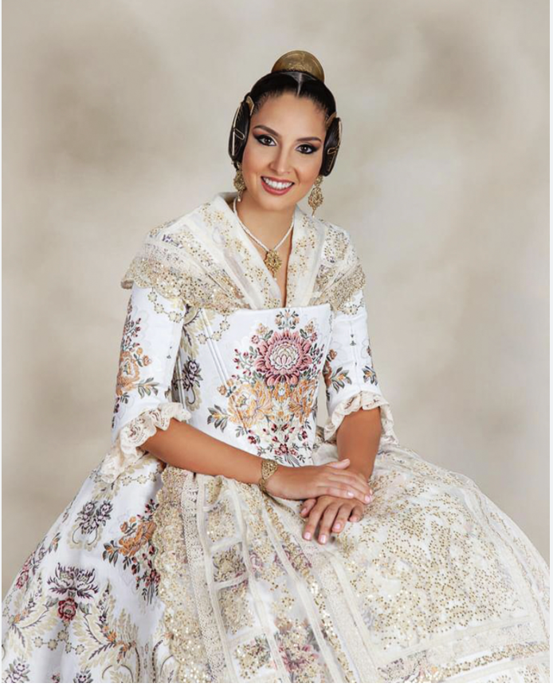
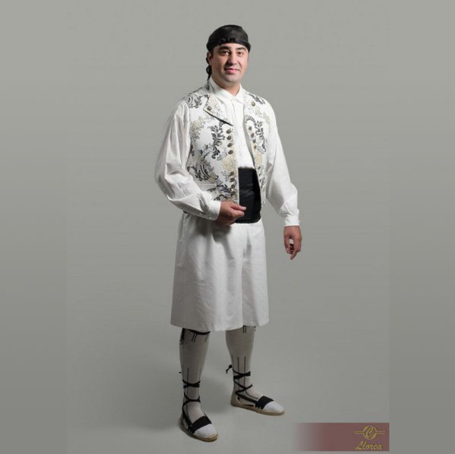
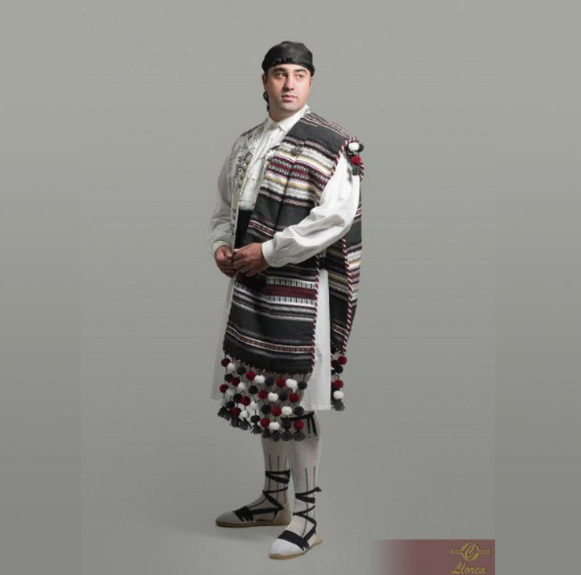

Història i Introducció
Les Falles tenen el seu origen en una antiga tradició dels fusters valencians, que cremaven els trastis vells i els suports de fusta la vespra de Sant Josep. Hui en dia s'han convertit en un esdeveniment festiu de primer ordre, on la crítica i l'art es barregen en una explosió inoblidable.
Els Monuments Fallers
L'essència de la festa recau sobre estes colossals escultures de cartó pedra, plàstic i fusta que omplen els carrers. Cada monument reflectix, amb to satíric i punyent, els esdeveniments socials o polítics més destacats de l'any.
Indumentària Fallera
L'indumentària tradicional valenciana és una de les joies més preciades de la festa. El vestit de fallera (basat en el vestit de valenciana dels segles XVIII i XIX) destaca per les seues teles de seda riques en colors i estampats florals brodats amb fils d'or i plata. Compta amb un cosset ajustat i una falda voluminosa gràcies al vistós davantal.
El vestit de faller (sovint conegut com a vestit de saragüell o de torrentí) és igual d'elegant. Sol portar calçons curts o llargs, jupetí brodat, faixa de color i, de vegades, la característica manta morellana a l'espatlla, complementat amb l'espardenya o la sabata tradicional.
El Pentinat: Una autèntica obra d'art
El pentinat de fallera és potser l'element més cridaner. Requereix hores d'elaboració i consistix principalment en tres monyos: un de gran al darrere (acompanyat per la pinta d'or o plata) i dos xicotets als costats anomenats "rodetes", d'on pengen uns ganxos decoratius. Tot el conjunt es fixa fermament per aguantar les llargues jornades festives intacte.





La Mascletà
Més que un espectacle pirotècnic, la Mascletà és un autèntic concert de soroll on el ritme i la intensitat van pujant gradualment. Es dispara cada dia al migdia i fa tremolar el sòl oferint una experiència sonora indescriptible.
Falles a Benicarló
Lluny del gran bullici de la capital, el foc també crema amb força al nord. Benicarló celebra les Falles sent una de les poblacions més referents fora de València on l'esperit festiu està profundament arrelat a la seua gent.
Música i Xarangues
La música és el fil conductor de tota la celebració fallera als carrers. Les bandes i xarangues s'encarreguen d'animar cada racó des de la despertà de bon matí fins a altes hores de la matinada.
Xarangues en directe
Els Pasdobles Fallers
No hi ha festa sense un bon pasdoble. Són l'ànima de les cercaviles, de les ofrenes i de qualsevol acte on una banda de música alci els seus instruments. Autèntics himnes populars que ressonen al cor de tots els valencians.
La Cremà
L'acte que posa fi a la festa. El foc purificador redueix a cendres el treball de tot un any enmig de la nit per donar pas, a l'endemà, a una nova etapa d'esforç i creativitat per als artistes fallers.
Apèndix Especial: Troba el teu professor de música!
Un extra indispensable quan ixes de mascletades i cercaviles: buscar aquella cara coneguda tocant en la xaranga! Reconeixes el teu professor de música entre els músics?